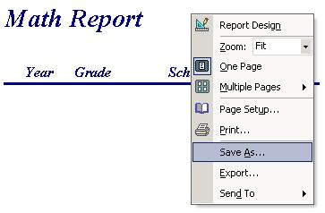

How to Save a Report
After requesting a report from a corresponding form, you can save the report so that it can be viewed later.
To do this, simply right click on the report while you are viewing it, and choose "Save As…" Then choose a
name to save the report as. After you press the "Save" button, the report will be saved in the database and
can be viewed later from the "Saved Reports" menu.
|